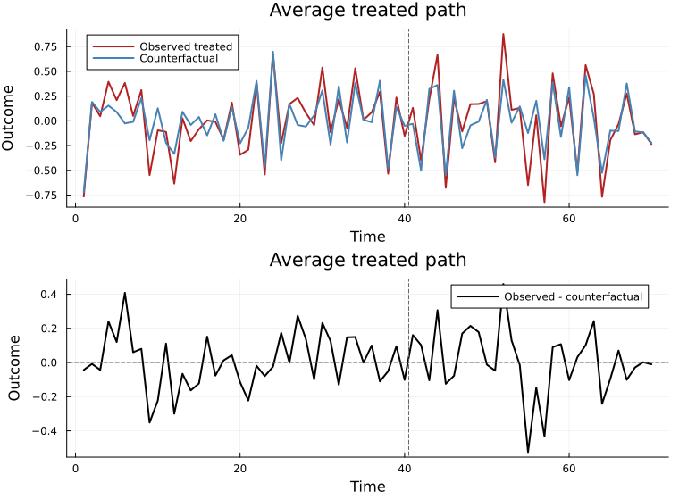

Multiple Treated Units
TASC.jl can mask several treated rows after the intervention. Put all treated units first or pass their row indices through treated_rows.
using TASC
using Statistics
Y, params, signal = simulate_tasc(N = 18, T = 70, d = 3, seed = 22)
T0 = 40
treated_rows = [1, 2, 3]
model = fit_tasc(
Y;
d = 3,
T0 = T0,
treated_rows = treated_rows,
n_em = 25,
tol = 1e-4,
)
pred = predict_counterfactual(model, Y)
size(pred.target), size(pred.effect), size(pred.variance)((3, 70), (3, 70), (3, 70))For multiple treated rows, target, effect, and variance are matrices with one row per treated unit:
post = (T0 + 1):size(Y, 2)
unit_att = vec(mean(pred.effect[:, post]; dims = 2))
overall_att = mean(unit_att)
(unit_att = round.(unit_att, digits = 3), overall_att = round(overall_att, digits = 3))(unit_att = [-0.006, -0.011, 0.046], overall_att = 0.01)Post-treatment donor observations remain available to update the latent state. Only the treated rows are treated as missing after T0.
The plotting recipe averages over the treated rows when treated_rows contains more than one unit:
using Plots
plt = plot(
tasc_plot(model, Y);
ci = false,
show_effect = true,
title = "Average treated path",
xlabel = "Time",
ylabel = "Outcome",
)